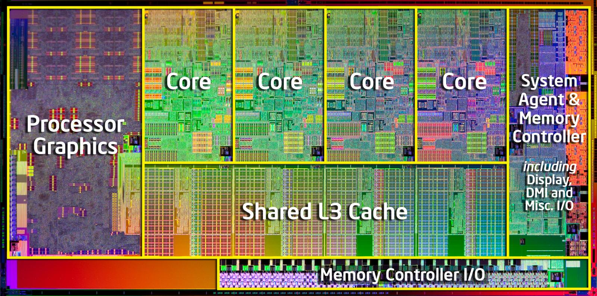

SRAM
SRAM steht für Static Random Access Memory. Es ist eine Art von Computerarbeitsspeicher (RAM), die für ihre hohe Geschwindigkeit bekannt ist. Im Gegensatz zu DRAM (Dynamic RAM), das die Daten regelmäßig auffrischen muss, um sie zu behalten, benötigt SRAM keine periodische Auffrischung, solange die Stromversorgung aufrechterhalten wird. Daher kommt der Begriff "statisch".
Speicherung der Daten:
- SRAM speichert Daten mithilfe von Transistoren (normalerweise 4 bis 6 Transistoren pro Speicherzelle, oft MOSFETs) in einer Flip-Flop-Konfiguration.
- Eine Zelle besteht aus einem Flip Flop, welches zwei stabile Zustände annehmen kann (0 oder 1 repräsentiert) und in diesem Zustand verbleibt, bis ein externer Impuls ihn ändert.
- Da die Flip-Flops die Daten "halten", solange Strom anliegt, ist keine Auffrischung nötig.
Geschwindigkeit:
- SRAM ist deutlich schneller als DRAM. Das liegt daran, dass es keine Lade- und Entladezyklen von Kondensatoren gibt und keine Auffrischung (Refresh) nötig ist, was Zugriffszeiten verzögern würde.
Kosten und Komplexität:
- Da jede SRAM-Zelle mehrere Transistoren benötigt, ist sie viel komplexer und größer als eine DRAM-Zelle (DRAM: nur einen Transistor und einen Kondensator benötigt).
- Dies führt dazu, dass SRAM pro Bit teurer ist als DRAM.
Anwendungen:
- Aufgrund seiner Geschwindigkeit und Kosten wird SRAM typischerweise als Cache-Speicher in Prozessoren (CPU-Cache, L1, L2, L3 Cache) verwendet. Hier werden Daten gespeichert, auf die der Prozessor sehr schnell zugreifen muss, um Engpässe bei der Datenübertragung zum langsameren Hauptspeicher (DRAM) zu vermeiden.
- Auch in Spezialanwendungen, die extrem schnelle Zugriffszeiten erfordern (z.B. in Routern, Hochleistungsservern), kommt SRAM zum Einsatz.
Flüchtigkeit (Volatile Memory):
- SRAM ist, wie DRAM, ein flüchtiger Speicher. Das bedeutet, dass die Daten verloren gehen, sobald die Stromversorgung unterbrochen wird.
